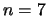

Next: About this document ...
Up: cdd/cdd+ Reference Manual
Previous: Acknowledgements.
- ABS97
-
D. Avis, D. Bremner, and R. Seidel.
How good are convex hull algorithms.
Computational Geometry: Theory and Applications, 7:265-302,
1997.
- AF92
-
D. Avis and K. Fukuda.
A pivoting algorithm for convex hulls and vertex enumeration of
arrangements and polyhedra.
Discrete Comput. Geom., 8:295-313, 1992.
- Ame
-
N. Amenta.
Directory of computational geometry.
http://www.geom.uiuc.edu/software/cglist/.
- Avi97
-
D. Avis.
User's Guide for lrs - Version 3.2, 1997.
available from lrs homepage
ftp://mutt.cs.mcgill.ca/pub/C/lrs.html.
- BDH03
-
C.B. Barber, D.P. Dobkin, and H. Huhdanpaa.
qhull, Version 2003.1, 2003.
program and report available from
http://www.qhull.org/.
- BFM97
-
D. Bremner, K. Fukuda, and A. Marzetta.
Primal-dual methods for vertex and facet enumeration.
In Proc. 13th Annu. ACM Sympos. Comput. Geom., pages 49-56,
1997.
- CGAF94
-
G. Ceder, G.D. Garbulsky, D. Avis, and K. Fukuda.
Ground states of a ternary fcc lattice model with nearest and
next-nearest neighbor interactions.
Physical Review B, 49(1):1-7, 1994.
pdf file available from
http://prola.aps.org/abstract/PRB/v49/i1/p1_1.
- CL97
-
T. Christof and A. Löbel.
PORTA: Polyhedron representation transformation algorithm (ver.
1.3.1), 1997.
http://www.zib.de/Optimization/Software/Porta/.
- Ede87
-
H. Edelsbrunner.
Algorithms in Combinatorial Geometry.
Springer-Verlag, 1987.
- Eri
-
J. Erickson.
Computational geometry pages, list of software libraries and codes.
http://compgeom.cs.uiuc.edu/~jeffe/compgeom/.
- FG
-
R. Fourer and J.W. Gregory.
Linear programming frequently asked questions (LP-FAQ).
http://www-unix.mcs.anl.gov/otc/Guide/faq/linear-programming-faq.html.
- FP96
-
K. Fukuda and A. Prodon.
Double description method revisited.
In M. Deza, R. Euler, and I. Manoussakis, editors, Combinatorics
and Computer Science, volume 1120 of Lecture Notes in Computer
Science, pages 91-111. Springer-Verlag, 1996.
ps file available from
ftp://ftp.ifor.math.ethz.ch/pub/fukuda/reports/ddrev960315.ps.gz.
- Fuk04
-
K. Fukuda.
Polyhedral computation FAQ, 2004.
Both html and ps versions available from
http://www.ifor.math.ethz.ch/~fukuda/fukuda.html.
- Gri90
-
V.P. Grishukhin.
All facets of the cut cone for  are known.
Europ. J. Combin., 11:115-117, 1990.
- Mar97
-
A. Marzetta.
pd - C-implementation of the primal-dual algoirithm, 1997.
code available from
http://www.cs.unb.ca/profs/bremner/pd/.
- MRTT53
-
T.S. Motzkin, H. Raiffa, GL. Thompson, and R.M. Thrall.
The double description method.
In H.W. Kuhn and A.W.Tucker, editors, Contributions to theory of
games, Vol. 2. Princeton University Press, Princeton, RI, 1953.
- Mul94
-
K. Mulmuley.
Computational Geometry, An Introduction Through
Randamized Algorithms.
Prentice-Hall, 1994.
Komei Fukuda
2005-08-18